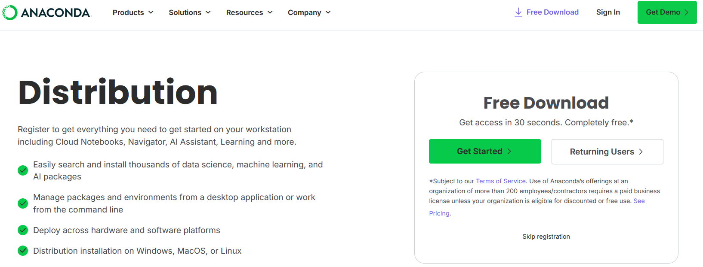
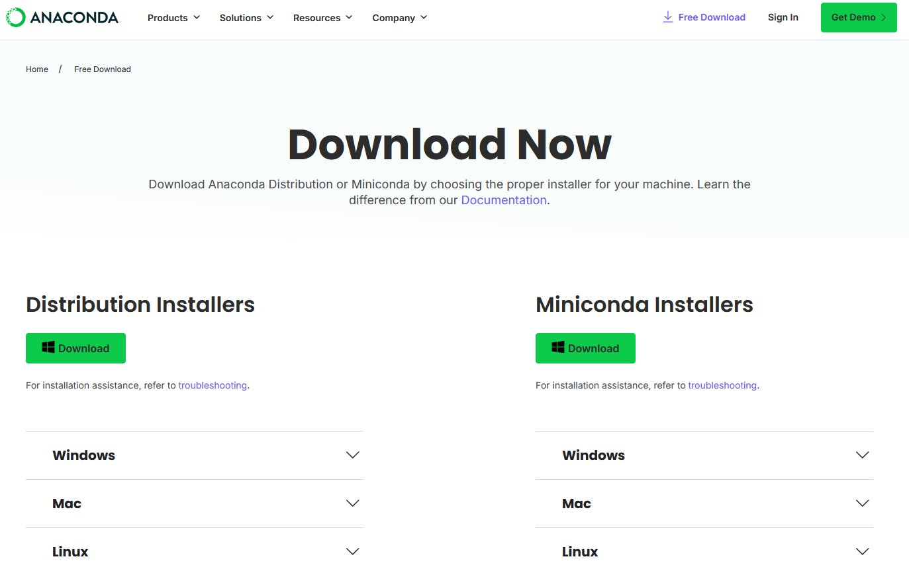
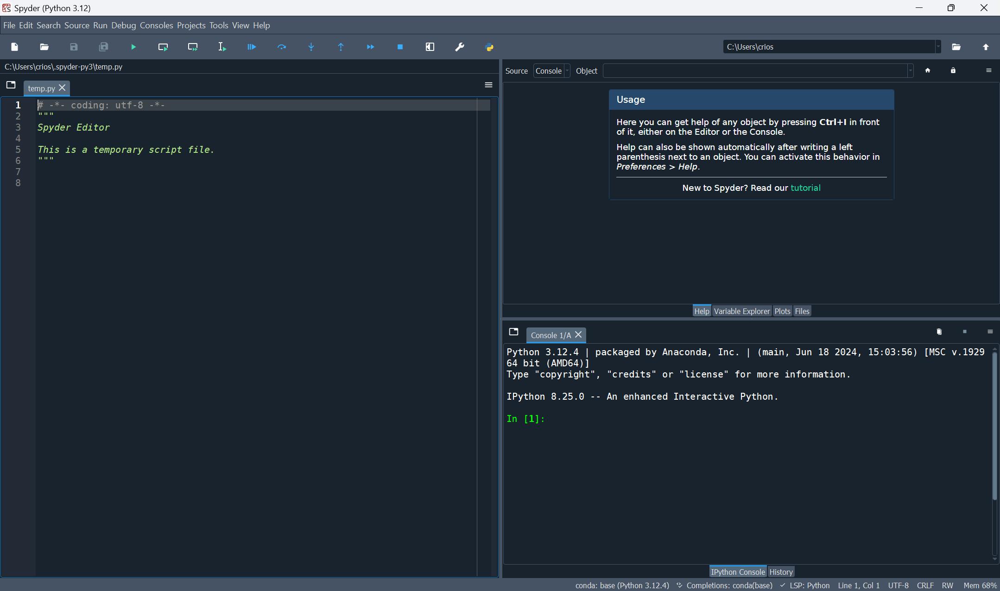
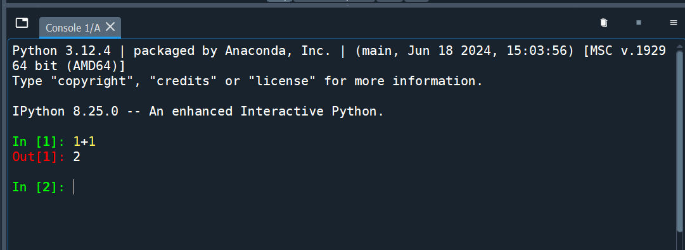
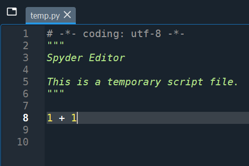
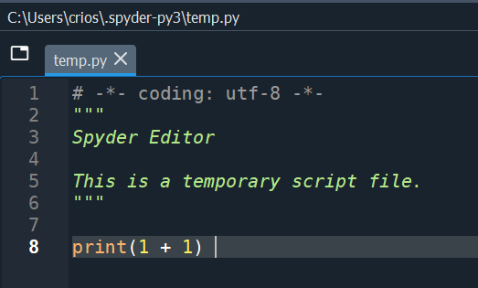

1 + 12
In this chapter we will learn how to install Python and run our very first command.
The easiest way to install Python is by installing Anaconda. You can do this by visiting https://www.anaconda.com/download.
You should see this page:

You should click the “Skip registration” button (although feel free to register if you like). You will then see the following page:

You should then click on the “Download” button. Mac users will see a Mac logo instead.
After downloading the file, click on it to install it. Follow the installation wizard and keep all the default options during installation.
After installation you will see a number of new applications on your computer. These are:
Open the Spyder program installed by Anaconda. You should see an application that looks like this:

In the bottom right pane you see a console with IPython. IPython is short for Interactive Python. We can type Python commands into this console and see the output directly. To find 1+1 in Python, we can use the command 1+1, similar to how we would do it in Excel or in the Google search engine. Let’s try this out in the console. First, click on the console to move the cursor there. Then type 1+1 and press Enter. We will see the output 2 on the next line next to a red Out [1]:

The red Out [1] means this is the output from the first line of input (after the green In [1]). The second command will have input In [2] and output Out [2].
Typing commands directly into the IPython console is fine if all you want to do is try out a few different simple commands. However, when working on a project you will often be executing many commands. If you were to do all of this in the interactive console it would be very easy to lose track of what you are doing. It would also be very easy to make mistakes.
Writing your commands in Python scripts is a solution to this problem. A Python script is a text file with a .py extension where you can write all of your commands in the order you want them run. You can then get Spyder to run the entire file of commands. You can also ask it to only run part of the file. This has many advantages over typing commands into the console:
Therefore it’s best practice to write your code in scripts. In the exam, you will also have to supply your script with your answers.
In Spyder, in the left pane you see a file open called temp.py. This is an example Python script. We can ignore what is written in the first 6 lines of the script. We can add our 1 + 1 command to the bottom of the script like this and save it:

In the Toolbar there are several ways to run this command from the script. For example, you can run the entire file, or run only the current line or selected area. If the cursor is on the line with 1 + 1 and we press the “Run selection or current line” button, then we will see the command and output appear in the IPython console, just like how we typed it there before. Using the script, however, we have saved and documented our work.
If you try run the entire file, you will see runfile('...') in the IPython console with the ... being the path to the Python script you are running. However, you don’t see a 2 in the output. This is because when running an entire file, Python does not show the output of each line being run. To see the output of any command we need to put it inside the print() function. We can change our line to print(1 + 1) to see the output when running the entire file:

When you run the entire file you should now see a 2 below the runfile('...') command.
We now know how to write and run Python scripts! In the next chapter we will learn more Python commands.
In this book, we won’t always show screenshots like we did above. Instead we will show code snippets in boxes like this:
1 + 12The part that is code will be in color and there will be a small clipboard icon on the right which you can use to copy the code to paste into your script to be able to experiment with it yourself. The output from the code will always be in a separate gray box below it (without a clipboard icon).